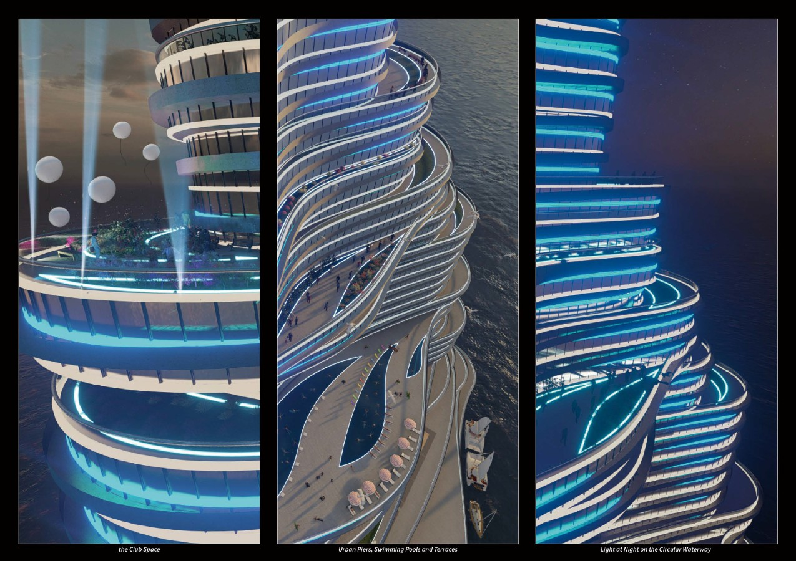

Wuhan was known as ‘the city of a thousand lakes’ and the ‘eastern Chicago’. Contrary to what one would expect with its many lakes, Wuhan is also known as the ‘furnace city’. According to the research, the year-on-year reduction in the size of the lakes is a significant cause of Wuhan’s high temperatures.
The design aims to uncover Wuhan’s current urban crisis and imagine the new urban and social ways that future technology would bring. The city will be not only a vertical city for urban habitation and experience but also a vertical factory for the energy crisis, a vertical lake for natural changes. The city is named as Probing Tower to reflect the utilizing of experimental petroleum technology, which establishes a new urban order across the crust layer, water layer, and air layer.

--- Growing, Growing, Brighter Everyday ! ---